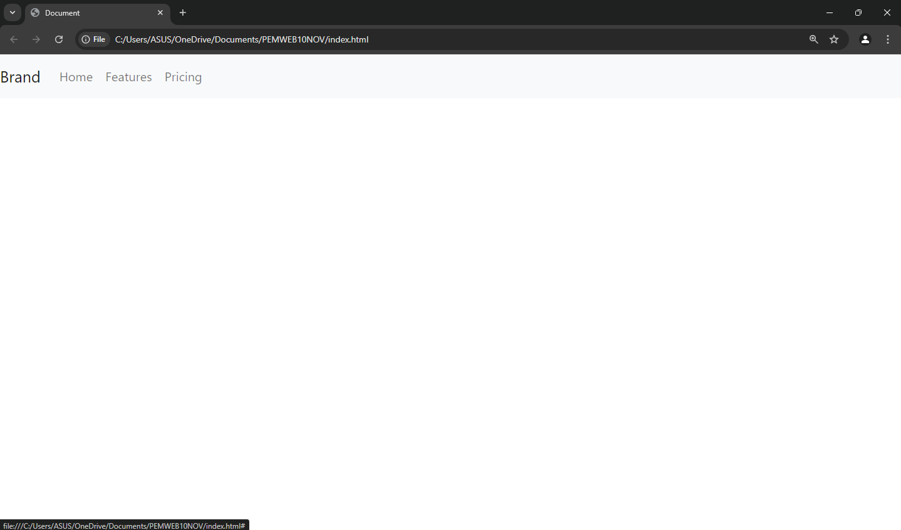

1. Bagaimana CSS dan JavaScript dapat diintegrasikan dalam pemrograman web?
Pentingnya CSS dalam Desain Web
CSS (*Cascading Style Sheets*) adalah bahasa yang digunakan untuk mendesain dan mengatur tampilan halaman web. Berikut adalah beberapa alasan mengapa CSS sangat penting:
- Mengatur Tampilan Visual: CSS memungkinkan pengembang untuk menentukan bagaimana elemen HTML ditampilkan di layar.
- Desain Responsif: CSS dapat membuat desain yang responsif.
- Kinerja yang Lebih Baik: Memisahkan konten dari presentasi membantu mempercepat pemuatan halaman.
Pentingnya JavaScript dalam Interaktivitas Web
JavaScript adalah bahasa pemrograman untuk menambah interaktivitas di halaman web.
- Interaktivitas: JavaScript menambahkan elemen interaktif seperti animasi dan efek transisi.
- Manipulasi DOM: Dengan JavaScript, pengembang dapat mengubah struktur HTML dan CSS tanpa memuat ulang halaman.
- Pengolahan Data di Sisi Klien: Mengurangi beban pada server dan meningkatkan responsivitas.
2. Bagaimana CSS dan JavaScript dapat diintegrasikan dalam pemrograman web?
- Menggunakan Inline Styles: Gaya langsung pada elemen HTML menggunakan atribut style.
- Menghubungkan File CSS Eksternal: Menggunakan tag link dalam head.
- Manipulasi DOM dengan JavaScript: JavaScript dapat mengubah gaya elemen HTML secara dinamis.
- Event Listeners: Menambahkan event listeners pada elemen HTML untuk merespons interaksi pengguna.
3. Jelaskan apa saja keuntungan menggunakan JavaScript dan CSS?
Keuntungan CSS
- Desain yang Konsisten: Memastikan konsistensi desain di seluruh situs web.
- Meningkatkan Aksesibilitas: Membuat situs lebih mudah diakses oleh pengguna dengan kebutuhan khusus.
- Fleksibilitas: Mempermudah perubahan desain tanpa mengubah HTML.
Keuntungan JavaScript
- Fleksibilitas Pengembangan: Digunakan baik di sisi klien maupun server.
- Pengurangan Beban Server: Mengurangi permintaan ke server, meningkatkan kinerja aplikasi.
- Komunitas Besar: Banyak sumber daya dan pustaka yang tersedia.
4. Jelaskan apa saja keuntungan menggunakan Bootstrap?
Bootstrap adalah *framework* front-end yang mempercepat pengembangan web responsif. Keuntungan menggunakan Bootstrap:
- Desain Responsif: Memungkinkan pengembangan layout responsif dengan mudah.
- Komponen Siap Pakai: Komponen UI seperti tombol dan form yang sudah teruji.
- Konsistensi Desain: Membuat desain antar halaman lebih konsisten.
- Dokumentasi Lengkap: Dokumentasi yang memudahkan pengguna.
5. Contoh Penggunaan Bootstrap: Navbar

Fungsi Navbar: Navbar berfungsi sebagai menu navigasi utama pada situs web, memudahkan pengguna untuk menjelajahi berbagai bagian situs dengan cepat dan efisien.